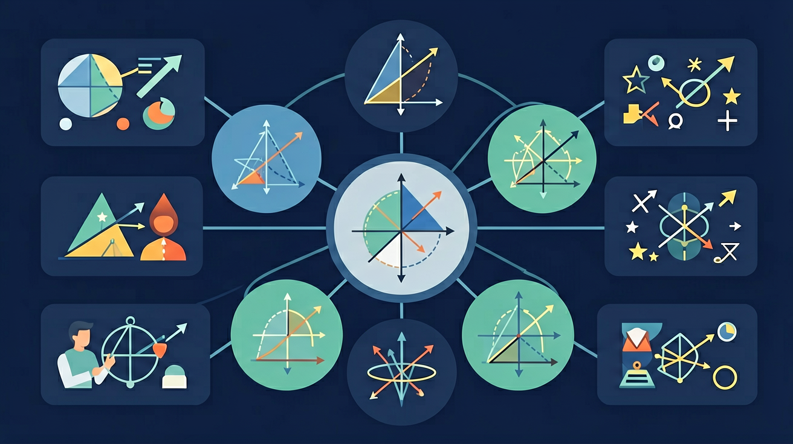

🎯 能说出圆的周长与面积公式推导过程
🎯 能计算不同圆心角对应的弧长和扇形面积
🎯 能分析拱桥设计中圆心的位置与承重关系
❓ 为什么车轮都是圆的不是方的？
❓ 扇形的面积公式和三角形好像啊，能一起记吗？
❓ 圆心角越大扇形的弧长就越长吗？
学完这一课，这些问题你都能自信地回答。
半径为3cm的圆中，60°圆心角对应的弧长是？
下列哪个是扇形面积计算的正确步骤？
🌉 问题引入：桥梁的拱形设计往往是圆弧的一部分。工程师需要知道拱的最高点（矢高）和跨度，就能推算出圆的半径。这就是弦-圆心距-半径关系的实际应用！
垂直于弦的直径平分该弦，也平分该弦所对的两条弧。
🎯 问题引入：一辆汽车绕弯道行驶，轮胎与地面的接触点始终只有一个，而且轮轴（圆心）到地面（切线）的距离恰好等于轮胎半径，这就是切线的完美诠释！
切线垂直于过切点的半径（切线⊥半径）。反之，过半径外端点作半径的垂线，即为切线。
从圆外一点向圆引两条切线，切线长相等，且该点到圆心的连线平分两切线的夹角。
🏛️ 问题引入：古希腊数学家泰勒斯发现：无论站在半圆弧上哪个点看直径，张角永远是90°！这个惊人的发现就是圆周角定理的特例——也叫"泰勒斯定理"。
同弧所对的圆心角是圆周角的2倍（即圆周角 = 圆心角 ÷ 2）。
直径所对的圆周角等于90°（泰勒斯定理）。
如图，某拱桥的拱形是圆弧AB的一部分。已知拱的跨度AB=24m，拱顶到弦AB的最大高度（矢高）为4m。设计者需要知道：